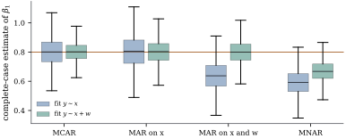

41.2 Complete cases and quick repairs
Confronted with holes, software does one of two things without being asked: it deletes the rows that have any, or it fills them and proceeds as though nothing had happened. Both are defensible in circumstances that can be stated precisely, and disastrous outside them. This section states them.
41.2.1. When deleting rows is safe
Write
Let the rows
(a) (General condition.) Let a procedure estimate a functional
(b) (Regression with selection on the covariates.) Partition
Then the conditional law of
(c) (Otherwise.) If Eq. 41.2.1 fails, write
so the complete cases follow the intended regression function exactly when
Proof.
(a) The complete cases are an independent sample from
(b) By Bayes’s rule,
(41.2.3)and under Eq. 41.2.1 the two selection probabilities cancel, leaving
- (c) Multiply Eq. 41.2.3 by
Part (b) is the most useful positive result in the subject and is routinely overlooked. Missingness may depend on the covariates as strongly as it likes, in any functional form, without harming a correctly specified regression. The complete cases are a biased sample of units — their covariate distribution is wrong, so any marginal summary of them is wrong — and yet the fitted conditional mean is right. This is selection on a regressor, as in Chapter 25; the binary-response version is Exercise (B1).
Warning. Part (b) needs the
conditional model to be right. If the true
regression is curved and the fitted one is a straight
line, selecting on
Take
Table
41.2.1. Mean complete-case estimate of
| mechanism | complete cases | fit |
fit |
|---|---|---|---|
| MCAR | |||
| MAR on |
|||
| MAR on |
|||
| MNAR on |
The first two rows are Proposition 41.2.1(b):
whatever the missingness does with

import numpy as np
rng = np.random.default_rng(4101)
n, reps = 300, 2000
beta = np.array([1.0, 0.8, 0.9]) # intercept, coefficient of x, of w
def one_run(mechanism, rng):
x, w = rng.normal(size=n), rng.normal(size=n)
y = beta[0] + beta[1] * x + beta[2] * w + rng.normal(size=n)
if mechanism == "MCAR":
eta = np.full(n, -0.6)
elif mechanism == "MAR on x":
eta = -0.6 + 1.6 * x # depends on a regressor only
elif mechanism == "MAR on x and w":
eta = -0.6 + 1.2 * x + 1.5 * w # depends on observed variables only
else: # MNAR
eta = -0.6 + 1.2 * (y - beta[0]) # depends on the value itself
missing = rng.uniform(size=n) < 1 / (1 + np.exp(-eta))
obs = ~missing
short = np.column_stack([np.ones(obs.sum()), x[obs]]) # y on x
long = np.column_stack([np.ones(obs.sum()), x[obs], w[obs]]) # y on x and w
b_short, *_ = np.linalg.lstsq(short, y[obs], rcond=None)
b_long, *_ = np.linalg.lstsq(long, y[obs], rcond=None)
return b_short[1], b_long[1], obs.sum()
names = ["MCAR", "MAR on x", "MAR on x and w", "MNAR"]
out = {m: np.array([one_run(m, rng) for _ in range(reps)]) for m in names}
for m in names:
s, l, k = out[m].T
print(f"{m:16s} complete cases {k.mean():5.0f} y ~ x: {s.mean():.4f}"
f" y ~ x + w: {l.mean():.4f}")Idea. Ask what the missingness depends on, then put those variables into the analysis. If everything the mechanism uses is in the model and the model is right, the complete cases are enough. If the mechanism uses the response, or a variable the model leaves out, they are not.
41.2.2. Available cases
A tempting middle course computes each summary from whichever records carry the variables it needs: a mean from everyone who reported that variable, a covariance from everyone who reported both. This available-case analysis, or pairwise deletion, uses more data, at the price of a covariance matrix whose entries come from different subsamples and need not be jointly realizable.
Twelve records on three variables, in three patterns
of four:
nan = np.nan
u = np.array([-1.5, -0.5, 0.5, 1.5])
d = np.array([0.5, -1.5, 1.5, -0.5]) # orthogonal to u, same length
pair = np.column_stack([u, 0.9 * u + np.sqrt(1 - 0.81) * d]) # correlation +0.9
flip = np.column_stack([u, -(0.9 * u + np.sqrt(1 - 0.81) * d)]) # correlation -0.9
D = np.vstack([
np.column_stack([pair, np.full(4, nan)]), # pattern A: z3 absent
np.column_stack([pair[:, 0], np.full(4, nan), pair[:, 1]]), # pattern B: z2 absent
np.column_stack([np.full(4, nan), flip]), # pattern C: z1 absent
])
R = np.ones((3, 3))
for i in range(3):
for j in range(i + 1, 3):
both = ~np.isnan(D[:, i]) & ~np.isnan(D[:, j])
R[i, j] = R[j, i] = np.corrcoef(D[both, i], D[both, j])[0, 1]
print("available-case correlation matrix\n", R)
print("eigenvalues", np.round(np.linalg.eigvalsh(R), 3))Under MCAR each entry is consistent and the difficulty is a finite-sample one; under MAR the entries are not consistent at all. Available-case analysis has uses in exploratory work and none in inference.
41.2.3. Single imputation
The other reflex is to fill the holes and carry on. Mean imputation replaces every missing entry of a variable by the mean of its recorded entries, leaving a pile of entries exactly at the sample mean and a spread that is too small.
Let
so the estimate of
Proof. The filled column’s mean is
With
Regression imputation replaces a
missing
Warning. Never treat a single set
of imputed values as data. The estimate may be fine; the
standard error, the
41.2.4. Weighting
Survey statisticians treat unit nonresponse
differently. If unit
are unbiased, because
41.2.5. Exercises
A. Check your understanding
Under the mechanism of Proposition 41.2.1(b),
show that the complete-case sample mean of
Solution. Selection changes the law
of
B. Practice
In Eq. 41.2.2 take
Solution. With
Verify Eq. 41.2.4 by
simulation for
Solution. The imputed entries
satisfy
Prove that Eq. 41.2.5 is an
unbiased estimating equation when
C. Going deeper
Let
Solution. The straight-line least
squares coefficient converges to the best linear
predictor coefficient